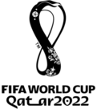
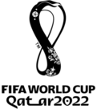

Sobre o Estádio
Estádio Al Bayt (em árabe: استاد البيت) é um estádio de futebol em Al Khor, Catar, destinado a partidas da Copa do Mundo FIFA de 2022.O contrato de construção do estádio foi concedido a Salini e Cimolai em 2015. Em janeiro de 2020, o estádio recebeu certificados de sustentabilidade de design verde, gestão de construção e eficiência energética.
História
A inauguração do estádio foi realizada no dia 30 de novembro de 2021, na ocasião da cerimônia de abertura para a Copa Árabe de 2021, seguida por uma partida entre o anfitrião Catar e o Bahrein. Esse evento teve a presença do Emir do Catar, Sheik Tamim bin Hamad Al Thani, o presidente da FIFA Gianni Infantino, alguns chefes de estado e autoridade e presidentes das associações membros. O novo estádio recebeu cinco jogos durante a Copa Árabe de 2021, incluindo a final do torneio. O Estádio foi inaugurado em 11 de fevereiro de 2020
Planos
A cerimônia de abertura da Copa do Mundo de 2022 acontecerá no Estádio Al Bayt. A FIFA e o Comitê Organizador do Comitê Supremo do Catar confirmaram a data de início para 21 de novembro, com uma audiência de 60.000. O projeto arquitetônico é inspirado nas tendas tradicionais dos povos nômades do Catar e da região. O estádio terá um formato de concha assimétrica, proporcionando assentos cobertos para todos os espectadores. Conectado a diversos sistemas de transporte, o estacionamento no local terá capacidade para 6.000 carros, 350 ônibus e 150 ônibus públicos, além de 1.000 táxis e táxis aquáticos. O estádio receberá cerca de 60.000 torcedores da Copa do Mundo, incluindo 1.000 assentos para a imprensa. O estádio é certificado por suas credenciais de sustentabilidade no Sistema de Avaliação de Sustentabilidade Global (GSAS) por uma série de certificações que representam design e construção sustentáveis, práticas de gerenciamento de construção e a eficiência de seu centro de energia. O estádio também recebeu uma classificação GSAS de cinco estrelas. Nele existirão luxuosas suítes de hotel e quartos com varanda com vista para o campo de futebol. Para marcar o Dia Nacional do Esporte, a abertura oficial do parque adjacente ao estádio foi anunciada para ser realizada no próprio dia dos esportes do Qatar, 11 de fevereiro de 2020.
Copa do Mundo de 2022
O estádio sediará os seguintes jogos da Copa do Mundo FIFA de 2022.